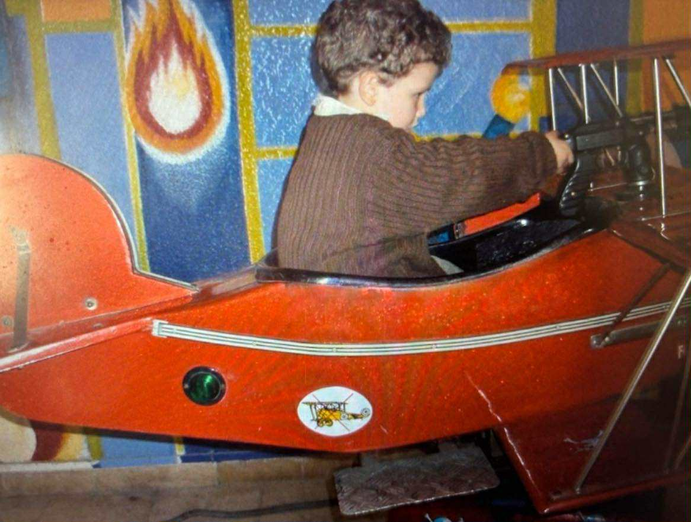
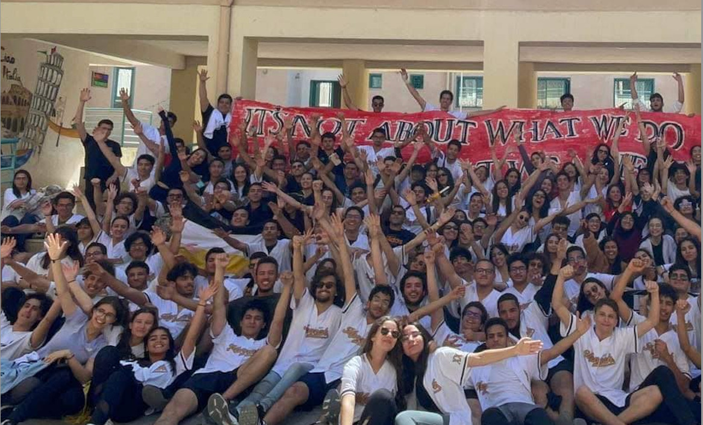
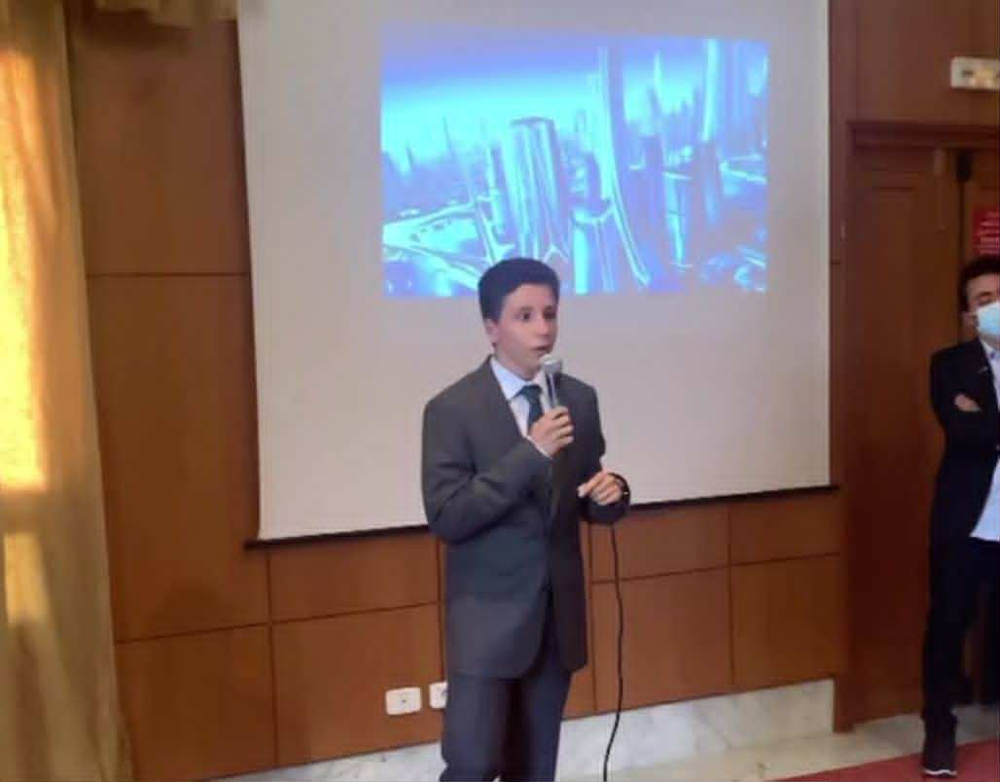

Profile
Engineering with focus and intent
Today
Currently based in Germany, focused on aviation: mechanical design, embedded systems, and software development for embedded platforms. The aim is steady. Bring rigor to each step, and ship work that performs.
Approach
A long-standing interest in how things work and how they can work better. That instinct to refine, to simplify, to give every component a purpose, shapes my engineering practice today.
Origin
Aerospace caught my attention early. A first flight at seven made an impression that stayed: the contrast between raw power and quiet stability set the direction long before I had the words for it.
Roots
Born and raised in Tunisia, a context that values curiosity, resilience, and care for craft. Those habits carried into how I approach engineering: deliberate, structured, and built to last.

First flightBackground
A structured education across two countries
Early education
Primary schooling in Tunis, with English studied from the age of seven. Outside the classroom, regular involvement in sports, cultural, and academic clubs supported a steady, well-rounded foundation.
Secondary studies
Attended Lycée Pilote El Menzah 8, a selective high school, with a strong focus on mathematics and physics. German added at seventeen. Active member of the Interact charitable club, an environment that built practical teamwork, communication, and leadership skills.
Higher education
Continued my studies in Germany, pursuing aerospace engineering at university level, the framework within which my current technical work has been built.

Lycée Pilote
Interact club